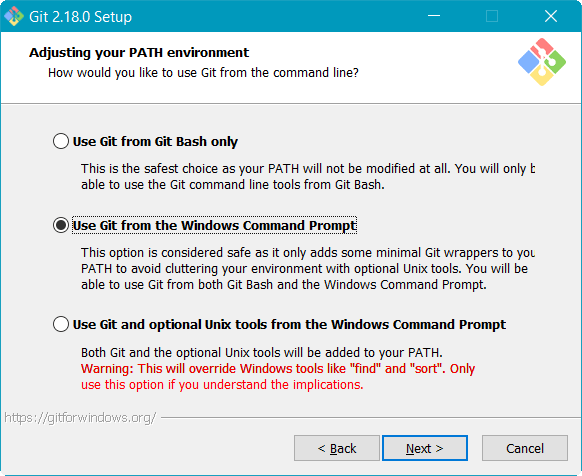
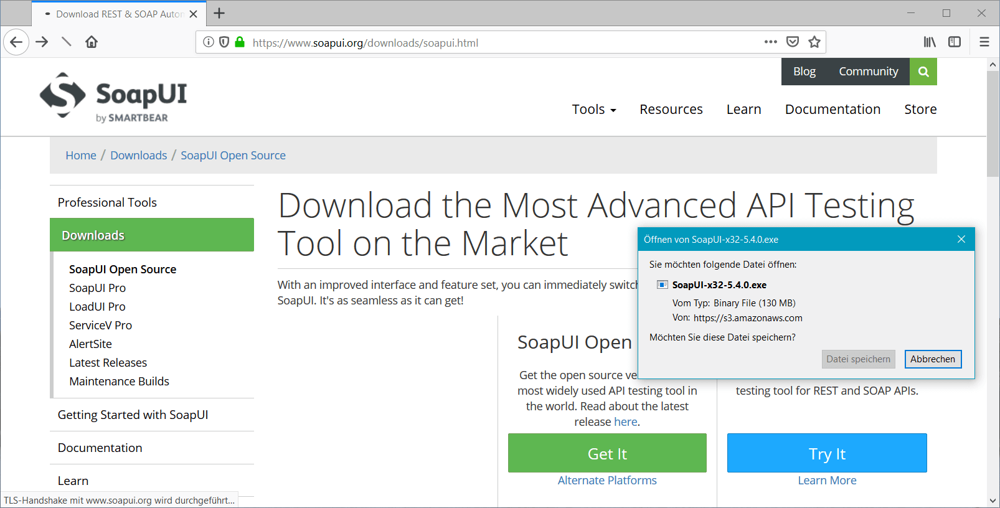
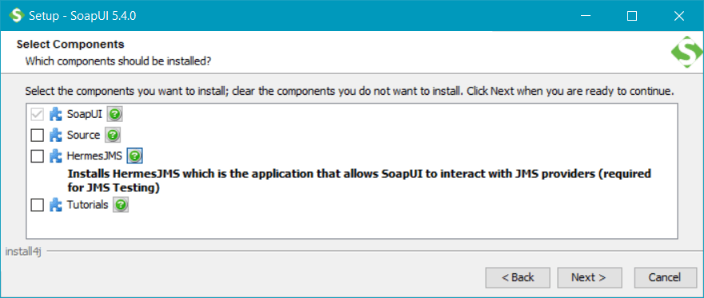
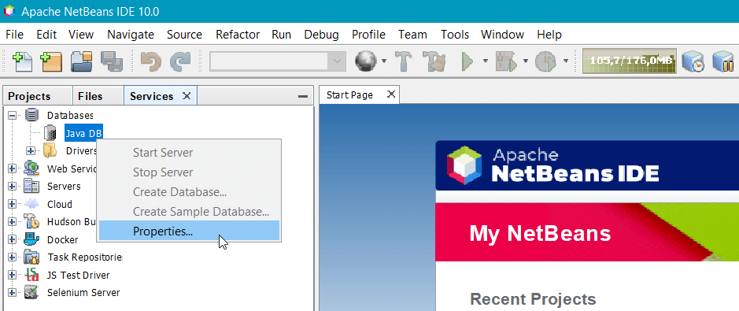
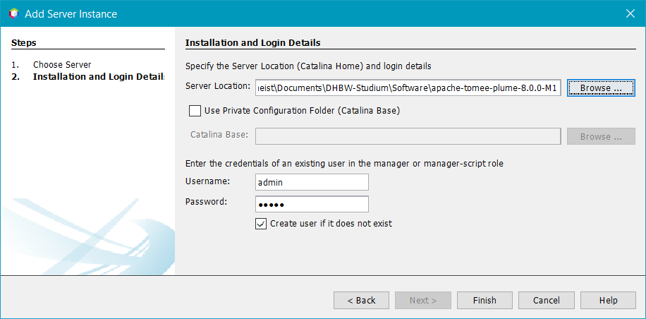
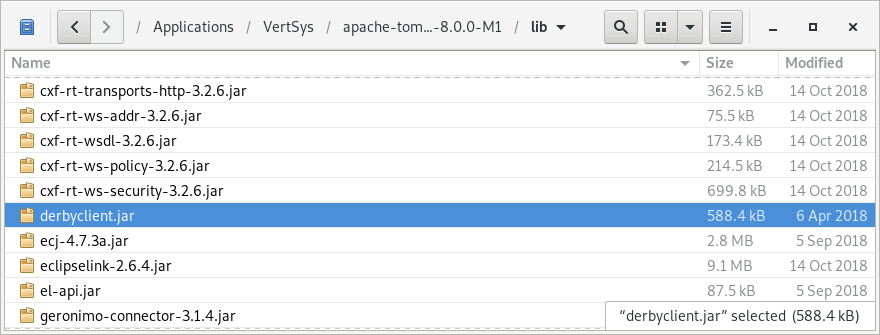

Dieses Kapitel sammelt verschiedene Installationsaleitungen, die in
früheren Versionen der Vorlesungen mal benötigt wurden. Sie werden
daher nur benötigt, wenn Materialien dieser älteren Vorlesungsversionen
von anderen Dozeten weiterverwendet werden sollen.
Git und GitHub
SoapUI
Apache TomEE
Apache Derby
Die Programme haben dabei folgende Funktion:
Git
Einst waren Compiler und Editor alles, was man zum Programmieren benötigte.
Doch je größer ein Projekt wird, desto schwieriger wird es, die Änderungen
am Quellcode nachvollziehbar zu dokumentieren, so dass schon früh spezielle
Werkzeuge hierfür entstanden sind. Git ist ein solches Werkzeug. es ermöglicht
uns darüber hinaus aber auch, mit mehreren Personen am selben Quellcode zu
arbeiten und diesen über das Internet zu teilen.
SoapUI
Im Rahmen der Vorlesung werden wir auch SOAP- und REST-Webservices programmieren,
die häufig zur Kommunikation in verteilten Anwendungen genutzt werden. Dabei werden
wir natürlich nicht umhin kommen, diese Services auch zu testen, was mit SoapUI
besonders einfach von der Hand geht.
Apache TomEE
Serverseitig nutzen die meisten Java-Anwendungen einen so genannten Applikationsserver
als Laufzeitumgebung. Denn als Bestandteil der Jakarta Enterprise Edition bietet er
die gesamte technische Infrastruktur, die wir zur Entwicklung benötigen, so dass wir
uns nur um die fachliche Anwendungslogik kümmern müssen. In der Vorlesung nutzen wir
den TomEE von Apache, da dieser mit weniger Ressourcen auskommt und erfahrungsgemäß
auch stabiler läuft, als andere Server.
Apache Derby
Kaum eine verteilte Anwendung kommt ohne eine Datenbank zur Speicherung und Verwaltung
ihrer Daten aus, wobei hier meistens klassische SQL-Datenbanken zum Einsatz kommen.
Kein Wunder also, dass Jakarta auch hier entsprechende Klassen definiert. Die meisten
Datenbanken sind dabei mit Java kompatibel, wir nutzen aber Apache Derby, da sie
nur wenig Speicher belegt und ohne großartige Installation auskommt.
1)
Besuche die Webseite https://git-scm.com/
und lade das Installationspaket für dein Betriebssystem herunter.
Download von Git
2)
Unter Windows heißt die Installationsdatei Git-2.18.0-64-bit.exe
oder ähnlich, wobei 2.18.0 die Versionsnummer ist und daher bei dir
abweichen kann. Starte die Datei, um die Installation zu beginnen. Während der Installation
wirst du gefragt, welche Komponenten installiert werden sollen. Du kannst die Vorauswahl
einfach übernehmen und auf weiter klicken.
Auswahl der zu installierenden Komponenten
Im nächsten Schritt fragt das Setup, mit welchem Editor du deine Commit-Nachrichten erfassen willst.
Falls hier Notepad++ zur Auswahl steht, solltest du es auswählen. Im Grunde
genommen ist es aber egal, da wir in der Vorlesung selten mit der Kommandozeile arbeiten werden.
Auswahl des bevorzugten Editors zur Erfassung der Commit-Nachrichten
Da Git ursprünglich für die Entwicklung des Linux-Kernels entwickelt wurde, enthält die Installation
unter Windows eine Vielzahl von Kommandozeilenprogrammen aus der Unix-Welt. Linux- und mac-User haben
diese Programme bereits installiert, unter Windows fehlen sie jedoch in der Regel. Die Auswahl im
nächsten Schritt solltest daher auf Use Git from the Windows Command Prompt
stehen lassen.

Auswahl der zu verwendenden Shell
Die nachfolgenden Fragen kannst du ebenfalls alle überspringen. Übernimm einfach die Voreinstellungen
und klicke dich solange durch, bis die Installation beginnt.
Ab jetzt heißt es Warten …
3)
Um die Installation zu testen, öffne ein Konsolenfenster. Am einfachsten geht dies über das Startmenü,
indem du dort den Befehl cmd eintippst und ausführst.
Start der Kommandozeile unter Windows
Gib innerhalb des Konsolenfensters den Befehl git ein und bestätige ihn mit
ENTER. Wenn alles gut geht, solltest du dann den Hilfetext von Git angezeigt bekommen.
Anzeige des git-Hilfetexts innerhalb der Kommandozeile
4)
An dieser Stelle solltest du dann gleich noch deinen Namen und deine E-Mailadresse in der Git-Konfiguration
hinterlegen. Somit kann Git die von dir vorgenommenen Änderungen an einem Quellcode auch wirklich dir zuordnen.
Gib daher folgende Befehle ein, wobei du Max Mustermann natürlich ersetzen musst:
Hinweis für mac-User: Sollte an dieser Stelle die Fehlermeldung Invalid active
developer path erscheinen, musst du die
Kommandozeilenwerkzeuge von Xcode installieren.
Gib hierfür einfach folgenden Befehl ein und klicke die Installation durch:
xcode-select --install
Danach kannst du die Befehle zur Einrichtung von Git erneut versuchen:
5)
Zum Schluss generieren wir noch die SSH-Schlüssel, mit denen du dich ohne Kennworteingabe später bei GitHub
authentifizieren kannst. Öffne hierfür das Startmenü und wähle folgenden Eintrag aus: Git
→ Git Bash. Dadurch öffnet sich ein Konsolenfenster mit einer UNIX-artigen Konsole.
Dort musst du dann folgende Befehle eingeben, wobei du schulmeist natürlich durch deinen
eigenen Anmeldenamen ersetzen musst. Diesen siehst du in der ersten Zeile vor dem @-Zeichen:
mkdir "/c/Users/schulmeist/.ssh"
ssh-keygen
Wenn ssh-keygen nach dem Ablageort der neuen Schlüsseldatei fragt, gib dementsprechend
"/c/Users/dein-benutzername/.ssh/id_rsa" ein. Die anderen Fragen kannst mit ENTER
einfach bestätigen. Achte bei allen Eingaben aber auf die exakte Schreibweise!
Generieren des SSH-Schlüsselpaars für die sichere Authentifizierung bei GitHub
Anschließend kannst du das Fenster mit exit beenden.
2)
Logge dich auf GitHub ein und klicke oben rechts auf deinen Avatar. Anschließend wähle den Menüeintrag
Settings aus.
Aufruf der Einstellungen in GitHub
3)
In den Einstellungen kannst du verschiedene Informationen über dich hinterlegen. Eine kurze Biographie,
ein Link auf deine Webseite sowie ein Foto wären nicht schlecht. Mindestens solltest du aber deinen
SSH-Schlüssel hinterlegen, damit du beim Programmieren nicht ständig deine Zugangsdaten eintippen musst.
Klicke daher links auf SSH and GPG keys.
4)
Klicke nun oben rechts auf New SSH key. In der darauf folgenden Seite kannst du
dem Schlüssel einen Namen geben (typischerweise der Name des Computers, zu dem er gehört). In das Feld
Key musst du den Inhalt der Datei c:\Benutzer\dein-benutzer\.ssh\id_rsa.pub
einfügen. Unter Linux und macOS heißt die Datei ~/.ssh/id/id_rsa.pub.
Copy & Paste deines öffentlichen SSH-Schlüssels nach GitHub
Klicke anschließend auf Add SSH key, um den neuen Schlüssel zu speichern.
1)
Besuche die Webseite https://www.soapui.org/ und lade die
Open-Source-Version von SoapUI herunter. Diese ist auf der Webseite leider etwas versteckt, da der Hersteller
einem lieber die kostenpflichtige Pro-Version andrehen will …

Download von SoapUI
2)
Unter Windows heißt die Installationsdatei SoapUI-x32-5.4.0.exe,
wobei 5.4.0 die Versionsnummer ist und daher bei dir abweichen
kann. Starte die Datei, um die Installation zu beginnen.
Installation von SoapUI
Unter Linux handelt es sich stattdessen einfach um eine ZIP-Datei, die du in unser Softwareverzeichnis
extrahieren kannst. Der Start der Anwendung erfolgt hier mit der Datei bin/soapui.sh.
Start von SoapUI unter Linux
3)
Bei der Auswahl der zu installierenden Komponenten kannst du alles abwählen. Wir benötigen kein HermesJMS
und auch keine Tutorials für SoapUI. Danach kannst du die Installation durchlaufen lassen.

Abwählen aller Zusatzkomponenten bei der Installation von SoapUI
1)
Auf Moodle haben wir eine vorkonfigurierte Version von Apache TomEE und Apache Derby zur Verfügung gestellt.
Lade das ZIP-Archiv auf deinen Rechner runter.
Download von TomEE und Derby
2)
Das ZIP-Archiv heißt schlicht TomEE und Derby.zip. Entpacke es in das Softwareverzeichnis für
unsere Vorlesung. Dabei sollten die drei Verzeichnisse apache-tomee-plume-8.0.0-M1,
db-derby-10.14.2.0-bin und Datenbankinhalt entstehen.
Die exakten Versionsnummern können natürlich abweichen.
Entpacken von TomEE und Derby
So sollte das Ergebnis aussehen
3)
Zunächst wollen wir die Datenbank einrichten. Wechsle daher in NetBeans auf den Reiter Services und
öffne dort das per Rechtsklick Kontextmenü zum Eintrag Databases → Java DB.
Innerhalb des Menüs gehe dann auf Properties….

Öffnen der Derby-Konfiguration in NetBeans
4)
Wähle folgende, eben entpackte Verzeichnisse in dem Fenster aus und bestätige diese mit OK.
Java DB Installation:db-derby-10.14.2.0-bin
Database Location:Datenbankinhalt
Konfiguration der Datenbankverzeichnisse in NetBeans
5)
Durch die eben vorgenommene Konfiguration sollte ein neuer Eintrag namens jdbc:derby://localhost:1527/sample
im Ordner Databases erscheinen. Klicke ihn mit der rechten Maustaste an und gehe dann auf Connect…,
um die Datenbank zu starten. Daraufhin sollten innerhalb des Ordners weitere Einträge mit den Schemas und Tabellen der Datenbank auftauchen.
Diesen Schritt musst du nun immer ausführen, wenn du eine Datenbankanwendung mit NetBeans entwickeln willst.
Alles in Ordnung, die Datenbank läuft
6)
Weiter geht es mit dem Applikationsserver. Öffne hierfür weiterhin im Reiter Services das Kontextmenü zum
Eintrag Servers und gehe dort auf Add Server…. Im darauf folgenden Fenster wähle
den Eintrag Apache Tomcat or TomEE aus und klicke auf Next.
Hinzufügen eines Tomcat- oder TomEE-Servers zu NetBeans
7)
Gib im nächsten Schritt nun folgende Werte ein und schließe das Fenster dann mit Finish.
Benutzername und Passwort kannst du frei wählen. Der Einfachheit halber nehmen wir hier admin
und admin, die bereits in der TomEE-Konfiguration hinterlegt sind.
Server Location:apache-tomee-plume-8.0.0-M1
Username:admin
Password:admin

Installationspfad und Zugangsdaten des TomEE-Servers
8)
Falls der neue Server nicht nach wenigen Sekunden im Ordner Servers zu sehen ist,
wähle den Menüpunkt Tools → Options aus und setze dort
den Radiobutton bei No Proxy. Anschließend musst du NetBeans neustarten.
Falls der neue Server in NetBeans nicht sichtbar ist, muss ggf. der Netzwerkproxy deaktiviert werden
Anschließend müsste der Server angezeigt werden und sich über das Kontextmenü starten lassen.
Wenn diese Meldung erscheint, wurde der TomEE-Server erfolgreich gestartet.
In einer älteren Version von „Verteilte Systeme” wurde noch die Java Enterprise
Edition auf Basis von GlassFish und später Apache TomEE behandelt. Die nachfolgende
Übersicht zeigt die Anpassungen, die an der Basiskonfiguration von TomEE notwendig
sind, um diesen in der Vorlesung nutzen zu können.
Hinzufügen des Derby JDBC-Treibers
Im lib-Verzeichnis wurde die Datei derbyclient.jar
mit dem JDBC-Treiber für Derby hinzugefügt. Die Datei ist in der Derby-Distribution vorhanden.

JDBC-Treiber der Derby-Datenbank im lib-Verzeichnis von TomEE
Definition der Datenbankverbindung
In der Datei conf/tomee.xml wurden zwei JNDI-Ressourcen für die
Datenbankverbindungen hinterlegt. Gemäß Empfehlung aus dem Internet, wurde dabei sowohl
eine managed als auch eine unmanaged
Verindung definiert. Diese Verbindungen werden von allen Beispiel-Anwendungen verwendet
und sind identisch zu der Version in NetBeans.
Einige Beispiele in „Verteilte Systeme” zeigen, wie in der web.xml
eine gesicherte HTTPS-Verbindung erzwungen werden kann, damit sensible Daten nicht unverschlüsselt
übertragen werden. Leider ist SSL in der Standardkonfiguration von TomEE aber nicht aktiviert und
es wird auch nicht einmal ein selbst-signiertes Serverzertifikat mitgeliefert. Folgende Zeilen
wurden deshalb in der conf/server.xml eingefügt. Der Kommentar beschreibt
dabei auch gleich, wie das selbst-signierte Zertifikat erzeugt wurde.
Hinzufügen der Rolle „manager-gui” für Benutzer „admin”
Dies ist für die Vorlesung nicht so wichtig. Jedoch wurde in der Datei conf/tomcat-users.xml
der bereits vordefinierte Benutzer „admin” der Rolle „manager-gui” hinzugefügt. Somit kann bei Bedarf die Weboberfläche
zur Administration des Servers gestartet werden.
Gemäß Same-Origin-Policy erlauben moderne Browser keine AJAX-Zugriffe auf fremde Domains mehr, wenn dies nicht vom
ausliefernden Webserver der Seite explizit erlaubt wird. Damit aber weiterhin AJAX-Zugriffe in den Beispielen und
Aufgaben von „Webprogrammierung” und „Verteilte Systeme” möglich sind, wurden in der Datei conf/web.xml
folgende Zeilen hinzugefügt, die einen Zugriff auf sämtliche, fremde Domains pauschal erlauben.
In den Beispielen für „Verteilte Systeme” wird auch gezeigt, wie ein datenbankgestütztes Anmeldeverfahren
in eigenen Webanwendungen realisiert werden kann. Dabei sind Fehler in der Programmierung aber leider nicht
immer von schlichten Eingabefehlern bei der Anmeldung zu unterscheiden. Falls dies der Fall ist, können in
der Datei conf/logging.properties folgende Zeilen einkommentiert werden, um den
Log-Level zu erhöhen:
# Log-Meldungen für Auth-Versuche in den Anwendungen
# Vgl. http://dev-answers.blogspot.com/2010/03/enable-debugtrace-level-logging-for.html
#org.apache.catalina.realm.level = ALL
#org.apache.catalina.realm.useParentHandlers = true
#org.apache.catalina.authenticator.level = ALL
#org.apache.catalina.authenticator.useParentHandlers = true
Vermeidung von Namenskollisionen gleichnamiger EJBs
Die Standardkonfiguration von TomEE lässt es nicht zu, dass zwei Webanwendungen unterschiedliche Enterprise
Java Beans mit gleichem Namen beinhalten. Dies steht im Kontrast zu den meisten anderen EJB-Containern wie
GlassFish oder WildFly, die damit keine Probleme haben. Aus diesem Grund kann in TomEE normalerweise eine
Anwendung nicht deployed werden, wenn es bereits eine andere Anwendung mit gleichnamigen EJBs gibt. Natürlich
kommt aber genau dies in unseren Beispielen vor, da die Beispiele oft ja nur Variationen desselben Themas sind.
Aus diesem Grund wurden in der Datei conf/system.properties folgende Zeile hinzugefügt,
um das Verhalten von TomEE an die anderen Server anzugleichen. Dadurch wird der Name der umgebenden Anwendung
Teil des globalen EJB-Namens.
Seit TomEE 1.7.4 besitzt TomEE Blacklists und Whitelists für die Serialisierung von Objekten. Diese sind
aus Sicherheitsgründen so eingestellt, dass alle Klassen auf der Blacklist stehen und die Whitelist komplett
leer ist, wodurch entfernte Aufrufe der Enterprise Java Beans effektiv verhindert werden. Dummerweise hat
die Blacklist immer eine höhere Priorität als die Whitelist. Umgekehrt wäre besser gewesen, um die Konfiguration
zu vereinfachen …
In der Datei conf/system.properties mussten daher folgende zwei Werte geändert werden,
um die Blacklist zu deaktivieren und den Remote-Aufruf freizuschalten.